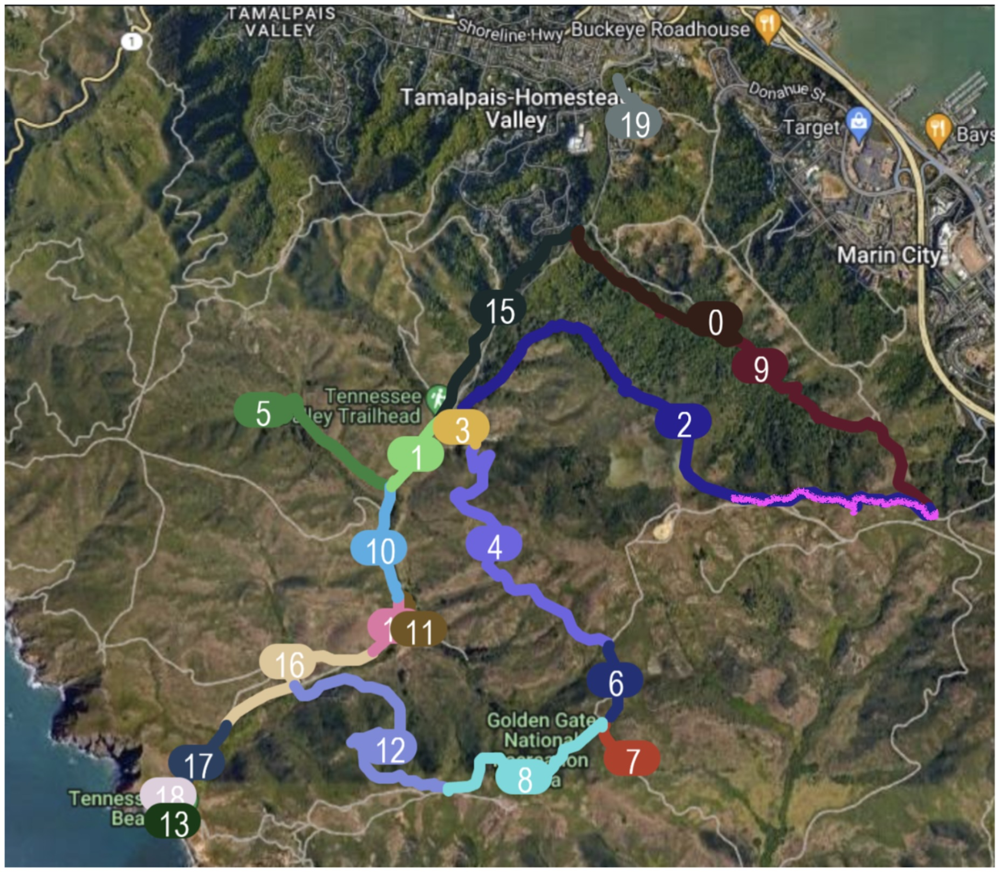

Tennessee Valley
Tennessee Valley subarea: Christmas Bird Count Details
The Tennessee Valley subarea is part of the Southern Marin Christmas Bird Count (CBC). This area features diverse habitats, from coastal trails to lower valley ponds, making it an ideal location for bird observation. Below are specific assignments and considerations for teams covering this area.
Overview

Owling
- Pre-dawn Owling: Teams begin at Owling Oakwood #0 (usually early around <=0530-0555) and Tennessee Valley #1 (~0600-0700) Owling can be productive here during early morning hours.
Team Assignments and Key Areas
Marincello to Alta Trail Returning Via Oakwood and Rhubarb (Loop):
Route: From the end of Marincello Trail, proceed to Oakwood Valley and return via Rhubarb Trail (or the reverse).
Team Lead: Kevin Stockman & Sharon Barnett.
Miwok Livery Stables and Old Springs Trail:
Route: Miwok to Coastal Trail to Hill 88, dropping into Tennessee Valley in the lower area.
Team Lead: Mark Schulist with JP.
Lower Tennessee Valley Trails:
Teams split into two:
Haypress Team: Covers trails through the north side of the valley.
Nursery Team: Focuses on trails through the south side of the valley.
Ponds and Tennessee Beach:
Both teams document observations at Lower Pond (separate lists unless teams reunite).
Tennessee Beach is surveyed from the shore, with an optional climb to the seawatch point above the beach for additional coverage.
Notes for Data Collection
Use unique eBird checklists for each trail, area, or significant habitat change (see the assigned maps below for each team).
Record effort details such as miles, hours, and environmental conditions to align with eBird data.
High counts (MAX) are used for overlapping stationary birds, while moving birds are flagged in comments for behavior and movement patterns.
Importance of Tennessee Valley to the CBC
The Tennessee Valley area offers a rich blend of habitats and species diversity. Properly organizing routes and maintaining detailed records ensure that this vital area contributes high-quality data to the overall Southern Marin CBC efforts.
Details & Maps for each team/section/route:
- 0455+ Owling Oakwood #0 {style=“background-color: rgba(128, 64, 0, 0.2); padding: 2px; border-radius: 4px;”} & Tennessee Valley #1 {style=“background-color: rgba(0, 128, 0, 0.2); padding: 2px; border-radius: 4px;”} (see above) (Alex has had some luck during the day)!